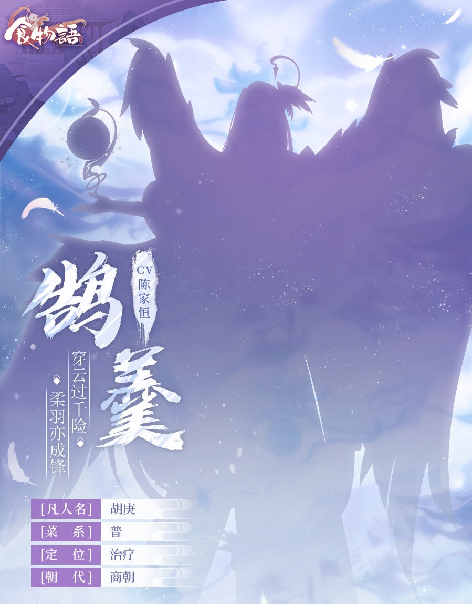
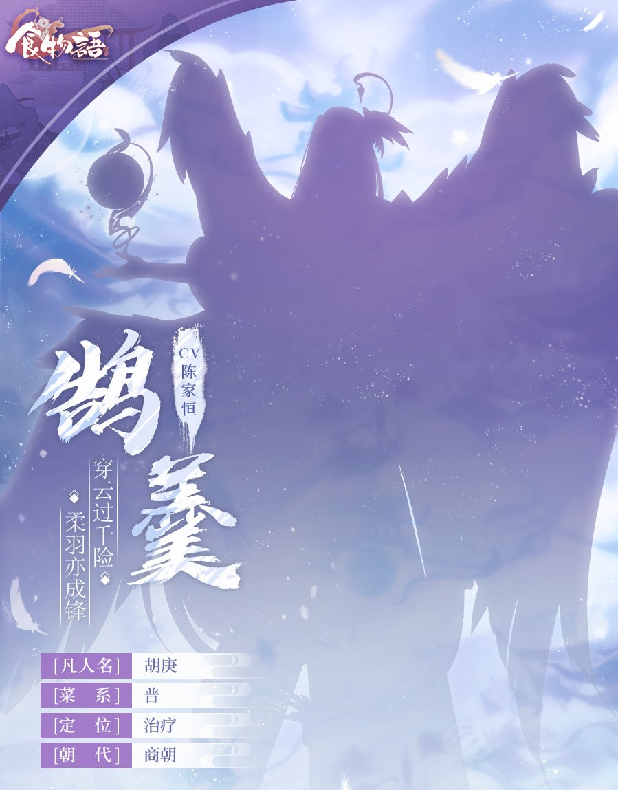

更新日期
更新內容：．十年窗下
――原聲音樂「琳琅匠心」――
·食物語音樂商店·
更新日期
更新內容：．十年窗下
――原聲音樂「琳琅匠心」――
·食物語音樂商店·
《食物語》與河北博物院、國家寶藏攜手共同守護傳承中華文物！

《食物語》x 河北博物院 x 你好歷史聯動專題活動

活動共邀請到18位聲優一同獻唱文物聯動群像曲《一味相傳》，
共同守護寄託文化傳承的中華文物！
台版活動PV
 Day3
Day3
 Day5
Day5
新食魂: 正定八大碗（CV.張震）
【琳琅匠心】全新語音長篇活動劇情限時開啟！
背景地域：琳琅幻境
劇情介紹：世上的一切工藝，均可在琳琅幻境中尋得。少主與宮保雞丁一同前去接受幻境之主的試煉，並跟隨其返回數百年前的時空探尋定窯白瓷失傳之謎，卻途中得知幻境之主竟是食魂之身……
【神工之禮】登錄送河北博物院聯動家具「盛唐餘音」
活動說明：每日登錄遊戲即可領取獎勵，累計登錄達到指定天數(15天)可領取河北博物院聯動專屬家具「盛唐餘音」。
《盛唐餘音》
河北博物院聯動專屬家俱
藏於河北博物院的彩繪散樂浮雕，誕於五代，盛唐風格為國內僅見。堅冷的白石經溫熱的雙手雕琢，琢成一支靜止卻已蹁躚千年的舞，一曲默然卻已回想千年的歌。
【活動商店】全新河北博物院聯動家具套裝【千秋此間】兌換
活動說明：本期活動商店分為【聯動家具商店】和【活動商店】，少主可在【聯動家具商店】中兌換河北博物院聯動家具套裝【千秋此間】。
*p.s: 此次家具要用換的*
【八珍玉食】少主專屬時裝「妙廚當家」限時登場！
活動說明：活動期間累積儲值達指定積分。
——慧心調百味，巧手燴佳餚——


【繪憶上新】新增「風生水起」專屬繪憶【澤被萬物】
——水澤潤萬物，千燈祈長安——

【時裝預售】宮保雞丁時裝「瓷骨蓮心」預售開始！
活動說明：少主可在預售期間通過活動介面購買預售禮包，獲取代金券。時裝「瓷骨蓮心」於正式售賣時，屆時擁有對應代金券的少主可使用則扣價格購買時裝「瓷骨蓮心」。
——蓮心喻秉性，君子器如瓷——

～～ 累積儲值 ～～
「少主時裝．妙廚當家」
慧心調百味，巧手燴佳餚。將酸甜苦辣烹出千滋百味，細火慢燉熬出煙火人間，用匠心烹調美味，進階廚神指日可待。

～～ 繪憶 ～～
『團隊研發日記·時裝篇7』
“水澤萬物，消災降福。願四海之內國泰民安，風調雨順。”


「風生水起．澤被萬象」
水澤潤萬物，千燈祈長安。澤被四方，萬象更新，河燈點點，遙寄千里祈願。漫天璀璨之下，他以星月為鑑，與你許下共守四海之約。

《游龍逐燈》
風生水起繪憶頭相框
你是蓮中的燈火，也是他心頭的微光，神龍庇護四海，卻依然向著你的光芒追逐。

《燈語清夢》
繪憶專屬家具
無邊月色下，他與你共乘小舟，載滿清輝，劃向蓮燈深處，亦劃向與你共赴的遠方。漫天的繁星落於他的眼瞳，他看向你時，亦在心中悄然許下了守護的誓言。

～～ 時裝預售 ～～
『團隊研發日記·時裝篇8』:
“定窯乃宋代六大窯系之一，釉澤瑩潤、紋飾秀美，以謙謹、錚然之美為人所賞——那位食魂亦是如此……”

「宮保雞丁．瓷骨蓮心」
蓮心喻秉性，君子器如瓷。君子如瓷亦似蓮，外有溫潤品性，內存錚然氣韻。縱然身處塵世，亦懷纖塵不染之心。
《青蓮濯濯》
宮保雞丁．瓷骨蓮心專屬頭相框
花開身畔，亦綻放於心田，細嗅蓮香一縷，浸潤青蓮之氣，不忘清廉之風。

【巧奪天工】世界王
——琳琅幻境列奇珍，上古天工何人承——
以下參考來自協會_御膳滿堂，占爺整理。
這次王需要正定，沒正定和夙音基本上打不起來。
《正定八大碗》0花可用，1花較好
《霸王別姬》6花以上，確保不死
《詩禮銀杏》建議滿花，不然賭普攻減cd
《三鮮脱骨魚》4花輸出最大
《龍鳳配》0花可用，建議4花
――――匠心閣-璃虹閣（業火幻君）――――
夙音、正定、三鮮、滾滾
夙音、太極、擔仔、川味
夙音、太極、滿花蟠龍、滾滾
吉利、三鮮>太極、輸出、蚵仔>叫花雞/青白血鴨
三鮮、吉利、滾滾、蚵仔 (全隊輸出基本賭歐洲驢還非洲驢...)
---王50%血以下，30%以下（龍鳳配）最好輸出陣容---
夙音、正定、四喜、蟹釀橙
夙音、正定、三鮮、龍鳳配
――――巧手閣-水月閣（涎玉幻君）――――
吉利、正定、(蟠龍、滾滾)or(三鮮/東璧/飛龍)or(擔仔/德州、川味)
詩禮、正定、輸出、德州
吉利、香腰/女兒紅、輸出、輸出
蝦餃、四喜、輸出、輸出
――――極目閣-謙風閣（御風幻君）――――

吉利、正定、(白菜、別姬)or(別姬、輔助（四喜/小羊）)
擔仔、堆血香腰、輸出、輸出/輔助
吉利、香腰/東坡肉/詩禮/青團、輸出、輸出
啊啊，我以為台版領不到剩下的陸版用來贈送的河北博物館聯動家具，代理阿官小燒突然開是要補齊東西啊...
【金燈映夜】限時登入領聯動版本御品家具
活動說明：活動期間，每天登入領全新河北博物館聯動專屬家具。
【官方粉絲團活動】參與互動送魂芯
活動說明：詳情參見食物語官方粉絲團。
【心願召喚】常駐御品食魂自選召喚陣重置！
活動說明：8/18~8/26。選擇的御品佔所有御品50%，珍品佔所有珍品25%。
【1.5週年限時魂芯】限時商店開啟！
活動說明：雜物商店限時上架1.5週年魂芯，消耗170金玉即可購入；若使用折扣券可以以85金玉的價格購入。
*折扣券可以與禮包商城內進行購買。*
*折扣券、1.5週年魂芯將會在8/26 23:59後過期，請各位少主不要忘記使用。*
【1.5週年特惠禮包】魂芯收藏禮包全新上線！
活動說明：於遊戲內商店購買。
※週年魂芯收藏禮包內含「魂芯」、*「半週年魂芯」、*「一週年魂芯」、「1.5週年魂芯」，其中「半週年魂芯」「一週年魂芯」為紀念魂芯，獲取後將會激活珍寶閣收藏，不可使用；「1.5週年魂芯」可在限時期間內正常使用~
【滿堂彩】1.5周年限時累儲活動上線，少主時裝「新禧賀歲」限時返場
活動說明：復刻少主時裝，累儲條件不變，積分36.99(港幣)。
——新釀斟舊友，嘉禧賀吉年——

【天道酬勤】全新限時玩法，特殊訓練開啟！
活動說明：軍演社委託蟹釀橙製作了特殊型號機關蟹——「非命-訓練型」，它裝載各類訓練器材，可滿足少主日常訓練的需要。每次開啟活動，會設立不同的訓練目標和不同的戰場規則，請少主根據情況調整演練策略。
[玩法規則]：少主可派出3支隊伍上陣，同名食魂只能上陣1次，同一膳具只能穿戴1次；
[本期目標]：對「非命-訓練型」造成傷害，3支隊伍造成的傷害總量越高，排名越高；
*上陣食魂和膳具可隨時重置，但相應戰績也會隨之重置。*
*本次挑戰無需消耗任何物資，少主可盡全力進攻。*
*玩法入口：啟程-天道酬勤(週末boss下方)*
——台前不見婆娑舞，幕後猶餘繞樑音——
食魂：霸王别姬

珍品食魂：醃篤鮮、豆汁兒
【復刻商店】收集「空桑紀念幣」兌換【粉墨傳奇】上海京劇院聯動家具套裝！
*「空桑紀念幣」: 活動期間，通關主線及資源關卡均會掉落，用於在【復刻商店】中兌換復刻活動商品，或者解鎖[圖鑑-故事篇-活動故事]中往期已復刻過的活動劇情。復刻商店中材料頁簽的限購商品將在本次更新後刷新限購次數。*

PV
新食魂: 明爐燒響螺（CV.魏超）、浪花東星斑（CV.馬洋）

【限時祈福】套裝「遠洋勝覽」登場！古船風格家俱限時祈福
【甜夢儲蓄】擔仔麵專屬時裝「甜夢儲蓄」限時登場！
活動說明：活動期間完成指定任務。
——絨羽暖融融，伴我入甜夢——
【海客奇珍】太白鴨專屬時裝「青鸞虎鼓」限時登場！
活動說明：活動期間累積儲值達指定積分。
——長劍嘯青冥，鸞歌共煙霞——

【時裝上新】臘味合蒸時裝「儺舞神戲」永久上架時裝商店！
——彩旌旋歌舞，儺面娛神明——
～～ 指定任務 ～～
「擔仔麵．甜夢儲蓄」
絨羽暖融融，伴我入甜夢。把甜夢藏進小雞存錢罐裡，是否能生出更多甜夢？答案是會的，抱著毛茸茸的小雞一夜好眠，白天才能更有精神，把甜夢變為現實呀！

～～ 累積儲值 ～～
『團隊研發日記·時裝篇9』
“虎鼓瑟兮鸞回車，仙之人兮列如麻。”如此美景，何不與我一觀？
「太白鴨．青鸞虎鼓」
長劍嘯青冥，鸞歌共煙霞。御劍乘風，飛越距離與光陰，去青崖夢寐裡追溯詩家豪情，往浩蕩天地中書寫新的傳說。
～～ 時裝商店 ～～
『團隊研發日記·時裝篇10』
“祭典就要開始了！兄弟，快帶上面具，跟我一起加入這場盛大的狂歡吧！”
「臘味合蒸．儺舞神戲」
彩旌旋歌舞，儺面娛神明。鼓樂齊鳴，神巫誦文，敬謝神明，祈願還願。少年全情投入樂腔戲舞之中，自身也散發著神性的光采。

【深海挽歌】世界王
——雲帆萬里渡重洋，浩海無際千星引——
尚良品一律滿花。
《明爐燒響螺(羅響)》3花可，6花以上優。[彩陶/酸枝木]
《浪花東星斑(教授)》1花可，4花最好(不會演)。[疊命中]
*《混湯酒釀元宵》滿花，代替東星斑。[疊命中]
《川味火鍋》滿花。
《素蒸音聲部(國主)》4花以上。
《糯米八寶鴨》6花。
《吉利蝦》3花以上。[戧金/攻擊套]
《師禮銀杏(小杏)》4花，未滿花賭普攻降cd。[戧金/瑪瑙/堆血]
《四喜丸子》6花。[瑪瑙/堆血]
《臭鱖魚(小鱖魚)》越多花越好。
《擔仔麵》滿花。[戧金/釉裡紅]
單體推薦:羅響>八寶(有跳)>飛龍、驢打滾(滾爺)、龍珠、國主
．一定要保住砲台，沒有它就只能刮痧了。4隻小怪一定要清掉，沒清乾淨眼淚不夠流，只要上負面(紅色)就能清了。
．教授4花+青銅可直接帶走小怪，1花要疊高配命中散具(仍然演)。2技等有免傷buff再放。
．羅響2技跟著boss大招走。
．滿花吉利蝦大招跟著boss二技走就行，沒滿花隨意。
．四喜帶隊易翻車(砲台保不住)。
．不一定有絕對，隊伍站位還請自行調整。
――――幽怨之波（海妖公主．怨）――――
《衝榜隊》
擔仔麵(戧金)、四喜(瑪瑙)、教授(4花)>元宵、火鍋(彩陶)
擔仔麵、東坡肉/小杏、元宵/教授、火鍋
吉利蝦、小鱖魚、教授/元宵、羅響/單體
吉利蝦/四喜、教授/元宵、單體、單體
《平民陣容》
小杏、元宵、滾爺、單體
擔仔麵、湯圓、元宵、滾爺
教授、吉利、羅響、八寶
――――憎恨之海（海妖公主．憎）――――
(海妖攻擊增強，四喜保不住了。)
《衝榜隊》
國主、吉利蝦、教授/元宵、羅響
吉利蝦/小杏、教授/元宵/臘八、小鱖魚、單體
吉利蝦/小杏、教授/元宵、飛龍/單體、羅響/單體
四喜、冰糖、教授/元宵/臘八、單體
――――憤怒之洋（海妖公主．憤）――――
boss群攻會降低攻擊3回合，需要可以淨化的食魂 -> 小杏(沒滿花賭普攻cd可以四回合放大，膳具攻擊套即可) / 湯圓(60等555瑪瑙才勉強站得住，散具堆血其他人撐不住)
《衝榜隊》
湯圓/小杏、教授/元宵、擔仔麵、火鍋
滿花東坡肉(彩陶)、教授/元宵、擔仔麵、火鍋
國主、教授/元宵、吉利蝦、羅響/飛龍
吉利蝦/小杏、教授/元宵、小鱖魚/擔仔麵/單體、單體
《平民陣容》
奶媽、元宵/臘八、單體、單體
四喜、東坡肉/湯圓、元宵、滾爺
——神器出，山河隕，鶉火崩，鶉首興——
食魂：楚夷花糕、西鳳酒

——華裾籠輕紗，張燈溢光彩——
【賞燈之約】特訓活動限時開啟！
活動說明： 特訓活動，提升等級到50等可獲得隨機御品常駐食魂。另外購買「色彩搭配進階」秘籍，可額外獲得少主時裝「流光雅韻」！
～～ 任務 ～～
「少主時裝．流光雅韻」
華裾籠輕紗，張燈溢光彩。正月賞燈之夜，祈福的紅紗掛滿枝頭，少主身著綴金鑲玉的華服，共赴流光熠熠的華燈之約。看萬家燈火同燃，祈來年風調雨順。

PV
新食魂: 纏花雲夢肉（CV.錢文青）、鬼火綠（CV.kinsen）

【主線劇情】主線第十三章劇情關卡開啟
——暗潮湧愛恨意難平，同敵愾燎原勢初成——
劇情簡介：15級以上可限時通關低難度關卡，74級以上可永久開啟本章節。
鵠羹將迎來再一次的成長。鵠羹成長活動【羽翼漸豐】將在通關先行體驗關卡或正式主線十三章後開啟，參與活動達指定要求，鵠羹將蛻變為最終型態，成長為御品食魂。
——穿雲過千險，柔羽亦成鋒——
 

【限時祈福】套裝「學海無涯」登場！校園主題家俱限時祈福
【花前月下】鬼城麻辣雞專屬時裝「風月入懷」限時登場！
活動說明：活動期間累積儲值達指定積分。
——拈紅弄花色，春光盡入懷——

【赤膽忠心】參與活動贏取蓮花血鴨時裝「紅蓮傳說」！
活動說明：金玉轉盤。
——長槍斬夙仇，紅蓮綻舊城——

【繪憶上新】新增「德州扒雞」專屬繪憶「悠悠旅行」！
——悠悠旅途長，月台留客心——

～～ 活動【羽翼漸豐】 ～～
『鵠羹最終型態』
“沒事，前面的路我都清好了，跟我來。”

御品「鵠羹」
“若只有變得更加強大，才能承受更多的悲傷，面對更多的難關，保護更多所愛的人……我願意去做。”

～～ 累積儲值 ～～
『時裝速報』
花枝於鐮刀盛放，揮舞間落英繽紛，倒不如就此與繁花一較風流。

「鬼城麻辣雞．風月入懷」
拈紅弄花色，春光盡入懷。在發間別一枝春色，鐮刀也綻出繁花。不知是這花色惑人，還是披翠簪花的那人更引人注目呢？

～～ 金玉轉盤 ～～
『時裝速報』
紅的熾熱與黑的冷艷，二色相撞，彷彿一團不滅的火焰燃燒在槍戟交錯的戰場中。
「蓮花血鴨．紅蓮傳說」
長槍斬夙仇，紅蓮綻舊城。

～～ 繪憶 ～～
『時裝速報』
與少主旅行可要做好萬全的準備，注意時間，列車將要出發了。

「德州扒雞．悠悠旅行」
悠悠旅途長，月台留客心。搖搖晃晃的旅途之路，以你為伴，以你為家，讓我有一方心安之隅，使我不再懼怕風雨，永遠一往無前。

【】世界王
——詭夢虛實莫測，怪奇幻化由心——

PV
新食魂: 過橋米線（CV.李昕）、狀元及第粥（CV.景向誰依）

【限時祈福】套裝「大魁天下」登場！殿試主題家俱限時祈福
【四寶淵藪】櫻桃畢羅專屬時裝「貓影翩躚」限時登場！
活動說明：活動期間累積儲值達指定積分。
——萌貓繞身畔，步步皆翩翩——
【時裝預售】西鳳酒時裝「飛隼巡軍」預售開始！
活動說明：少主可在預售期間通過活動介面購買預售禮包，獲取代金券。時裝「飛隼巡軍」於正式售賣時，屆時擁有對應代金券的少主可使用則扣價格購買時裝「飛隼巡軍」。
——風氅展韜略，飛隼巡三軍——
～～ 累積儲值 ～～
『時裝速報』
“願光明與幸福之神阿胡拉·馬茲達護佑你，美麗聖潔的人兒。”
「櫻桃畢羅．貓影翩躚」
萌貓繞身畔，步步皆翩翩。舉止優雅的貓耳王子，輕點腳尖向你溫柔致意，邀你共度奇妙而溫馨的時光。
～～ 時裝預售 ～～
『時裝速報』
白色矛隼振翅間掀起凜冽之風，以鷹眼俯瞰世界，志在凌雲之間。
「西鳳酒．飛隼巡軍」
鳳氅展韜略，飛隼巡三軍。如熾喉烈酒，如劍間寒光，那位權臣的矛隼巡過這片疆域，所至之處，千軍歸服。
【鹿鳴取賢】世界王
——十年窗下無人知，一舉成名天下聞；文人風骨哪堪折，書生意氣破青雲——
．尚良品一律滿花。
．攻擊膳最好青白玉、釉裡紅、疊攻擊散套，爆擊會減傷。
．用不到喬賢。
．沒有兩隻助戰(170等)or一隻助戰(90等)+元汲，基本沒傷害。
．御射，沒有太白鴨基本沒傷害。
．沒有元汲，6花八寶(青白玉)是你的好選擇。
――――禮樂――――
《衝榜隊》
小鱖魚(戧金/命中)、年年有餘(堆血)、牡丹(青白玉)、元汲(釉裡紅)
小鱖魚(戧金/命中)、年年有餘(堆血)、牡丹(疊攻擊)、6花八寶(青白玉)
――――御射――――
《衝榜隊》
夙音(疊攻擊)、小鱖魚(戧金/命中)、桃花(釉裡紅)、太白鴨(青白玉)
小鱖魚(戧金/命中)、魚叔(命中)、牡丹(疊攻擊)、桃花(青白玉)
――――書數――――

《衝榜隊》
夙音(疊攻擊)、小鱖魚(戧金/命中)、一品(疊攻擊)、元汲(青白玉)
小鱖魚(戧金/命中)、揚州(疊攻擊)、一品(疊攻擊)、6花八寶(青白玉)
PV
食魂: 雉羹（CV.王敏納）

【破魔定乾坤】主線第一部終章．下，全語音劇情即將開啟！
【限時祈福】套裝「甜趣蜜意」登場！甜品風格家俱限時祈福
【稚兔踏春】青團專屬時裝「豎耳聆春」限時登場！
活動說明：活動期間累積儲值達指定積分。
**之後永久上架時裝商店**
——春半踏青行，傾耳辨佳音——

【蒼龍蹈海】風生水起時裝「諸海縱橫」！
活動說明：金玉轉盤。
——玄冰起狂潮，潛龍騰海淵——
【師法自然】限時活動召喚陣開啟，御品「普茶料理」、珍品「乾燒蝦仁」召喚機率提升！
～～ 累積儲值 ～～
『時裝速報』
撐起精心準備的胡蘿蔔造型傘，柔軟的兔耳輕輕搖晃，終於可以和少主一起去踏青啦~

「青團．豎耳聆春」
春半踏青行，傾耳辨佳音。春風的吟唱，溪水的流淌，花木窸窣與鳥語蟲鳴。他一路蹦蹦跳跳，豎起毛茸茸的耳朵，將來自春天的天籟之音盡數聆聽。
～～ 金玉轉盤 ～～
『時裝速報』
玄冰劍引動深海之水，幻化為蛟龍於海上騰躍，他如同矗立海上的燈塔，守望引領著海族眾人。
「風生水起．諸海縱橫」
玄冰起狂潮，潛龍騰海淵。是隱忍克制，亦或化浪為龍，守護諸海而戰？狂怒的濤聲已給出了答案。
【同心破魔】世界王
——解夙仇親友共聚首，齊心力破魔定乾坤——
．尚良品一律滿花。
．八寶一律6花。
．帶滾爺賭臉。
．非輔助一律攻擊套自行配。
．對護盾和召喚物有巨量傷害 ==> 香腰、國主不能出場。
．助戰+20%傷害。
．食魘助戰都帶 辣條 優。
．盡量帶群攻。
．Boss傷害高，要帶補師，吉利蝦散具疊血。
――――魔化易牙――――
《衝榜隊》
四喜(戧金)、蝦餃(命中)、飛龍/一品、雉羹(青白玉)
==> 四喜抬自己和蝦餃血量。
《可自動掛機組．約17~20萬以上》
吉利蝦(疊血)、 任選3隻==> 小鱖魚(戧金)_雉羹_一品_血鴨_牛肉_滾爺_飛龍_八寶_龍珠
．合理搭配範例．
吉利蝦(疊血)、小鱖魚(戧金)/滾爺(攻擊套)、牛肉(攻擊套)/一品/血鴨、雉羹(攻擊套)
吉利蝦(疊血)、小鱖魚(戧金)、飛龍、雉羹/血鴨>滾爺
吉利蝦(疊血)、小鱖魚(戧金)/滾爺、血鴨(酸枝/青白玉)、飛龍
吉利蝦(疊血)、小鱖魚(戧金)、血鴨(酸枝/青白玉)>滾爺/飛龍、一品
吉利蝦(疊血)、小鱖魚(戧金)/滾爺、一品(酸枝)、八寶(酸枝)
．注意，約13萬．
吉利蝦(疊血)、小鱖魚(戧金)、滾爺、飛龍
——幻樂起蜃樓，暖風撥新音——
食魂：素蒸音聲部